Practical steps towards a more inclusive practice
This page is an alternative format for the slides, which includes my speaker notes.
But if you prefer, you can access the Google slides or you can download a PowerPoint file (4.1MB) - which should be accessible.
What this talk is about:
There is a false belief that making your design accessible requires more time, more money and technical expertise.
In this session, I present practical steps to integrate to your practice to:
- improve the accessibility of your design
- take digital inclusion into account
- have a more inclusive practice
- focus your research on the groups which will give you the most valuable insights
This session is for people relatively new to inclusion and accessibility. It focuses on easy, free and quick practical steps.
You will be able to start implementing these practical steps without needing new tools or training, and it won’t take you a lot of time either.
The session format is 40 mins talk and 5min for questions.
Participant takeaways:
- learn how to create more inclusive designs
- understand how to take digital inclusion into account
- basic checks to uncover most common issues
- extra resources to learn more after the session
Accessibility
1 in 4 people are disabled in the UK
A disability can affect your vision, your hearing or your speech.
It can be a physical disability or a cognitive disability, this means it affects your memory, or how you process things, communicate and think.
It can also be a mix of more than one disability.
In fact,it’s quite frequent that people have more than one disability and they are not always visible to others.
It’s different for everyone.
Source for 1 in 4: disability prevalence by age group - GOV.UK
Defining accessibility
“Accessibility means that people can do what they need to do in a similar amount of time and effort as someone that does not have a disability.
It means that people are empowered and can be independent.”
Source: GOV.UK Blog post
Neurodiversity
Neurodiversity is an umbrella term which cover conditions like:
- Dyslexia
- Autism
- ADHD (= Attention Deficit and Hyperactivity Disorder)
- Dyspraxia
- Dyscalculia
- OCD (Obsessive Compulsive Disorder)
- Tourette's syndrome and more
There is a lot of overlap between these conditions.
How it affects people
- think, process information and language
- interact socially and communicate with others
- perceive space and time
1 in 7 people are neurodivergent in the UK
This is about 15 to 20% of the general population.
But it’s often underestimated and under-declared.
It’s much higher for people working in Tech.
→ above 20% and probably up to 50% in tech and the creative industry.
Speaker notes:
It’s often underestimated and under declared because even though things are improving, it’s still often perceived negatively, so people are wary of disclosing.
These numbers are much higher for people working in tech.
It’s very hard to have reliable numbers, I’ve got 3 sources:
- Major new report from the Tech Talent Charter reveals tech employers massively underestimate neurodivergence - We are Tech women (Feb 2024)
- What it’s like being neurodivergent in the creative industries - Creative review (Avril 2024)
- Written evidence given to a UK Parliament committee (PDF)
If you consider the people in your team, it’s very likely that quite a few are neurodivergent.
I’ll come back to this at the end when talking about designing with your team and communicating your design.
Accessibility:
The basics
There is a false belief that making your design accessible requires more time, more money and technical expertise.
But actually, there are lots of very basics things you can do as designer to avoid a lot of accessibility issues.
State of digital accessibility - WebAIM survey
WebAIM - Looked at the top 1 million websites’ homepage:
- 56 errors per homepage on average
- about 96% did not comply with WCAG 2.2
Source: WebAIM Million (February 2026)
Speaker notes:
Digital accessibility is progressing.
A lot of companies and organisations are trying to do better but it’s often still pretty poor.
WebAim stands for Web accessibility in mind.
WCAG stands for Web Content Accessibility Guidelines and is a standard for digital accessibility.
Most errors are not that hard to fix
84% of the pages had low contrast text errors
This is when the colour of the text is not contrasted enough with the background. There are many tools to help you with this.
53% have missing alternative text for images or diagrams
This is the text description which will appear if your image doesn’t load or which will be read by a screen reader for people who cannot see your image, again there is a lot of guidance to help you learn how to write good alternative texts.
46% of the pages have empty links
This is when you use an icon for a link for example, like the social media icon in the footer of your website.
Simple things you can do
- check colour combinations
- give images an alt text
- same for empty links (like your social media icons in the footer)
- use plain English
- respect the headings order H1, H2, H3, H4…
- make the text of your link meaningful
Speaker notes:
Some simple steps will fix around 90% of the issues found in the survey.
You should check colour combinations, are they contrasted enough?
Give images and diagrams an alternative text.
Same for empty links, if you give an alt text to the icon used as link, then a screen reader will say where this link is taking you.
Use plain English, avoid jargon, and use simple words.
Respect the headings order H1, H2, H3, H4… don’t skip a level.
Make the text of your link meaningful, so instead of ‘Read more’ you could have ‘read more about the result of this survey’ for example.
Fonts and layout
DON’T WRITE IN ALL CAPS
Do not do what I did on this first line: when you write in all caps, you lose the shape of the words, which slows down people reading, in particular dyslexic people.
When people use screen readers, it is sometimes interpreted as an acronym and the letters might be announced one by one which is annoying.
Avoid italics and fancy fonts
It’s also harder to read for many people
Align left and do not justify your text
You should align your text on the left to help people find the start of the next line. If you don’t, it gets harder, especially for people magnifying their screen
Justifying your text is also problematic because this means the space between words will vary, and that also makes it harder to read.
Resources about accessibility
Accessibility:
Colours
Make sure your contrast are good
- text, button, links, icons, navigation items
- hover states, visited links, error messages
- check dark mode!
Don’t rely on colour alone (1)
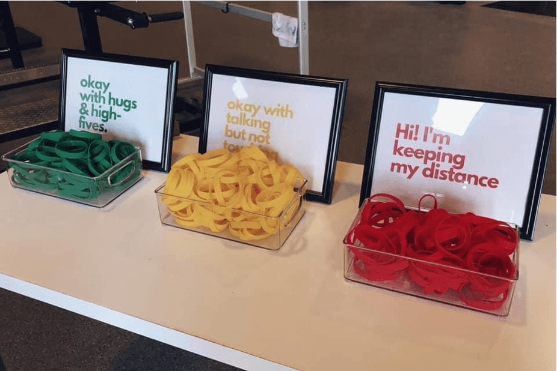
Don’t rely on colour alone (2)
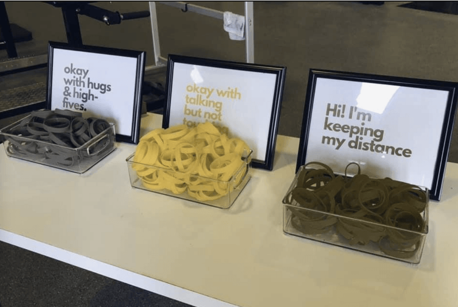
Dyslexia vs low vision
Light cream background and dark blue text is better for some dyslexic people.
But high contrast can be better for some people with low vision.
Speaker notes:
Keep in mind that people might change the colours. One of the reasons is dyslexia or visual stress impairment. Some colours or filters will help them read better.
A pale cream background and dark blue text, seems to be something which helps some dyslexic people (not all of them).
A high contrast is better for some people with low vision, so they might also change your colours.
There is no perfect solution
“User needs vary widely across people who have low vision, and one user’s needs may conflict with another user’s needs.”
Accessibility Requirements for People with Low Vision, W3C
Resources about colours
- Contrast checkers with suggestions: Accessible colours
- From a colourblind designer to the world: Please stop using red and green together
- How to use color blind friendly palettes to make your charts accessible
- Supporting users who change colours on GOV.UK and a presentation by Oliver Byford (Google slides)
Accessibility:
Simple tests to do
There are simple tests you should do when you are designing websites, because people might not be using your website the way you are expecting them to.
People might use your website in a way you didn’t expect
- A dyslexic person might use a screen reader even though they can see
- Someone might be using a switch or their voice to interact instead of a keyboard or a mouse
- A person might be zooming or use a large mouse pointer
Examples of assistive tech
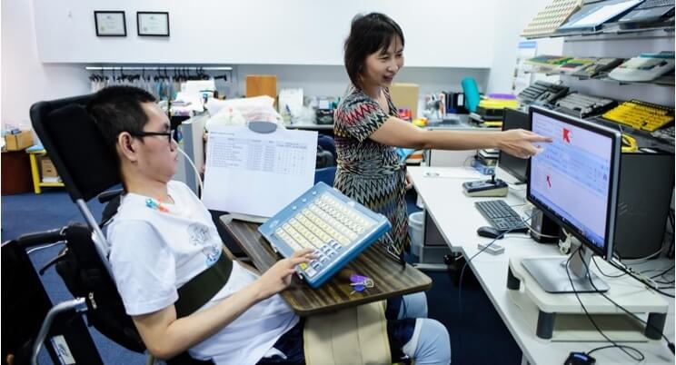
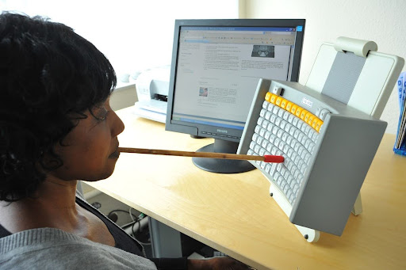
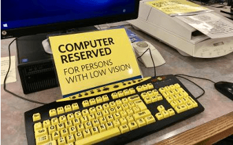
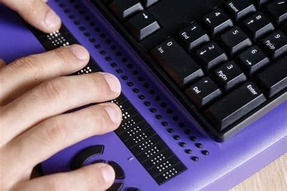
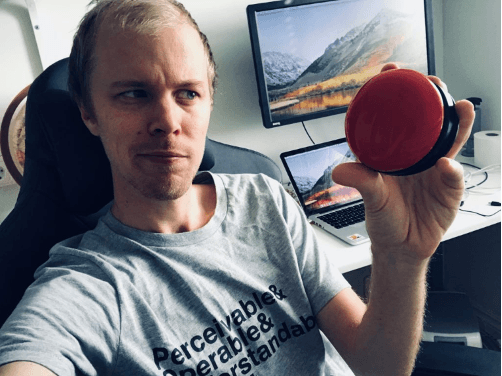
Speaker notes:
For those of you unfamiliar with assistive technologies, I’ve put some examples on this slide:
- you have a person using a mouth stick to use a keyboard
- a man holding a switch which is a tool to help you navigate a website or an app, this one is round
- someone using a Braille keyboard
- a special keyboard for people with low vision
Photos from these websites:
{kind=link}
2 simple tests you should do
If you create websites there are 2 simple tests you should do:
Test Keyboard only navigation:
Don’t use your mouse and instead, use the Tab Key to move forward and Shift plus the tab key to move back.
Can you still navigate your website in a way that makes sense and allow you to access everything?
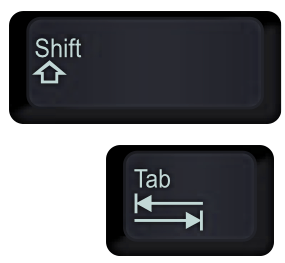
Zoom at 400%:
Use the Ctrl and + keys
On the slide I’m showing Substack, which do not care much about accessibility so no surprise. It’s very hard to use with a sticky footer and a sticky header so not much space in between to read anything.
It would be equally bad on Amazon forcing you do scroll horinzontally and you would get lost very quickly.
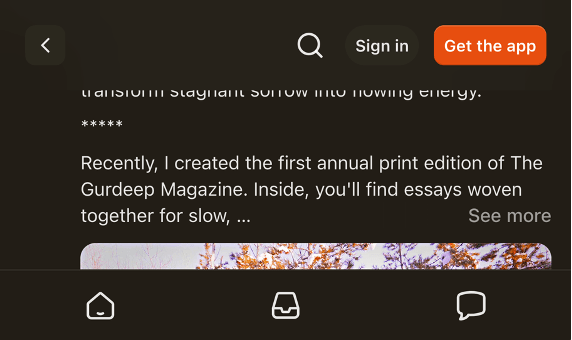
Doing these 2 tests will help you pick up some issues - so do get in the habit. But also make sure to test with disabled people.
Resources about assistive technologies
Accessibility:
Other
Numbers
Low numeracy affects half the working-age adults in the UK
Accessible numbers project by Laura Parker
![Do…
round numbers up to the nearest whole number.
Do leave space around numbers.
Do fill in the information you already have.
Do use sentences to add context about numbers.
Do let people include spaces when entering numbers.
Do user research with people who struggle with numbers.
Do not…
use decimals unless it's money.
Do not overwhelm people with too much content.
Do not expect users to repeat or remember numbers.
Do not use tables or grids without explaining what the numbers mean.
Do not rush users to enter numbers accurately.
Do not force people to enter a number or do a sum to verify themselves.](assets/images/Practical-steps/do-dont.png)
Speaker notes:
Don’t forget about users with dyscalculia and low numeracy.
Low numeracy affects half the working-age adults in the UK - this is a lot of people among your users but it could also be your colleagues, in your team or among people delivering the service.
To learn more about this, you can check the Accessible numbers project by Laura Parker, there is advice and podcast episodes to understand how to do better. I really recommend it.
A while ago now, Laura worked with Rachel Malic and Jane McFadyen to create a new do and don’t poster for designing for people with dyscalculia or low numeracy: link to a blogpost explaining how they made this poster.
The Accessible numbers project has advice and podcast episodes for you to learn more about the problems and how to do better.
Do NOT use accessibility overlays
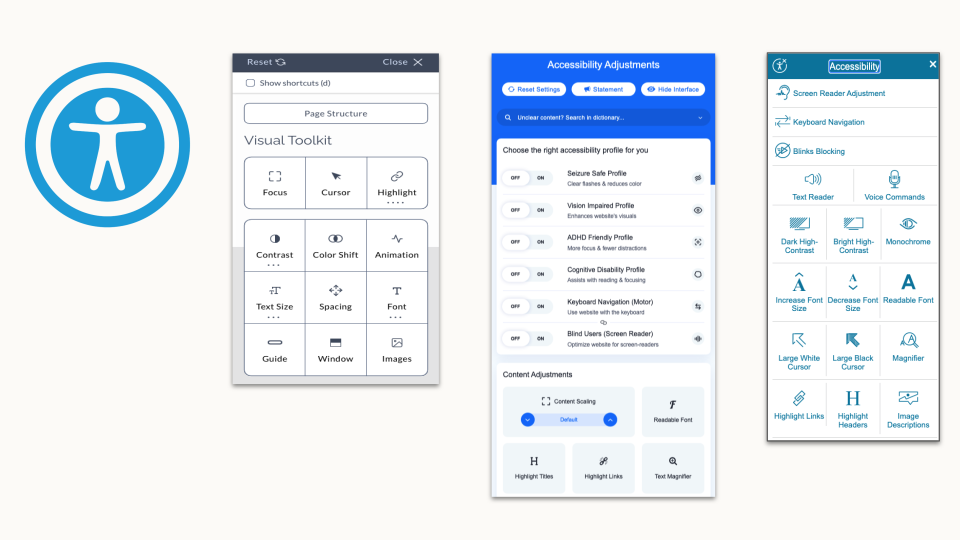
Speaker notes:
One thing that might tempt you as an easy way to fix accessibility issues is using an accessibility overlay.
I’ve put some illustrations on this slide if you are not familiar with this.
On the websites using them, you will first need to find where to enable them as it’s often not easy to find.
It might be a floating icon with a symbol for accessibility and then a very busy menu will appear, with a multitude of options to choose from.
Most of them are things your device or your browser offers anyway.A lot of people still thinks they can make their website accessible once it’s all done and ready to go live.
You can be sued if your website is not accessible, so when someone tells you they can fix it with an overlay, it’s sounds too good to be true … and it is.
They are many good articles explaining why it’s not a solution like the Overlay Fact Sheet.But to give you a few examples:
- they won’t fix bad or no alt text for an image
- if you can’t tab through your website or if the tabbing order is no right, it won’t fix this
- If you have a photo of a text, then magnifying it will still make it hard to read and pixelated etc
If you want more info on this:
- Overlays are not the solution to your accessibility problem
- The ADA lawsuit settlement involving an accessibility overlay
Digital inclusion
We have covered the starting point: accessibility. But in terms of inclusion, you also need to look at digital capability
Digital inclusion in the UK in 2025
95% adults are online in 2025
→ 5% = about 3.5 million are not online
8 million lack basic digital skills
Speaker notes:
It’s not easy to find numbers, and they often vary a lot depending on the sources you look at.
They don’t always count the same things. But to give you an idea of the problem: according to the Lloyds’ bank UK Consumer Digital Index 2025, 95% of the adults were online in the UK
If you look at digital skills, it’s about 8 millions adults who lacks basic digital skills.
These numbers are from the Good Things Foundation. You should have a look as there is a lot more data about digital inclusion which might interest you.
How people access internet
People who do have access could still:
- have slow internet
- be data poor
- only have a mobile
- rely on old devices
- live in area where the network is unreliable
So it’s important to keep this in mind, to design services which people can access on an old mobile for example, without too much data and to have alternatives to access your service.
Taking digital capability into account
- provide a file’s link instead of only an option to download it
- if it’s not possible, provide the size of this file so people can decide if they download or not
- keep images big enough so the quality allows to see them well, but small enough so it doesn’t use too much data to load
- Use compressing tools like tinypng.com - smaller size is better for the environment too and for the performance of your website
→ it’s a balance to have between accessibility and digital inclusion - Make sure you website works on mobile phone, small screens and with a low connection
Simulating poor network
To see how your website behave with poor network, you can use google chrome dev tools and simulate this.
You don’t need to be a dev to try this. You don’t need to be a dev to try this, in Google Chrome, on your laptop:
- Open your website, click right anywhere on the page, a menu will appear and you select ‘Inspect’ - This is giving you access to the Chrome Dev tools
- This will open a window, and within it, in the top menu, select the item ‘Network’
- Once you select it, you will find a drop down list where you can select different network speeds which will be simulated and you will see how long things take to load on your website
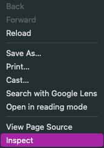
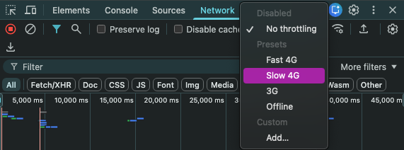
This is interesting to do regularly on various pages to get a feel on how people experience your website in these conditions and then see how you can improve this.
You can see a little demo video showing the simulation of a UX Scotland website page loading with 3G:
Test for mobile view
Another thing you should test is how it works on mobiles and small screens. Ideally you should test on many devices, but you can simulate it for free using Chrome dev tools again on a laptop.
- in the top menu; at the start, select the icon looking like a mobile in front of a big screen
- another view of your page will appear with a menu at the top, under ‘Responsive’ select a view of the device you want
- you can even rotate to change from portrait to landscape view
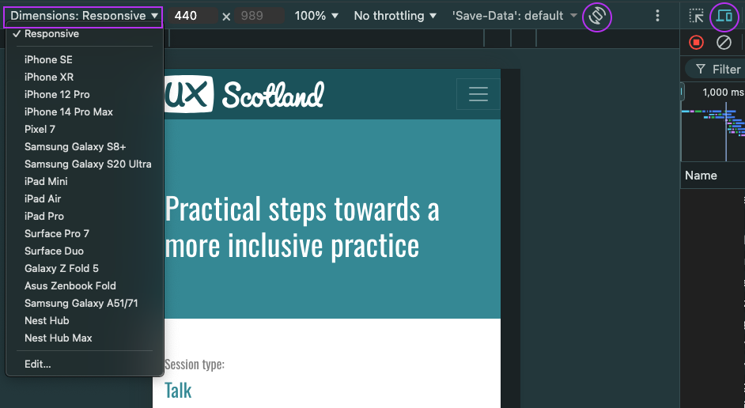
You can see a little demo video showing the simulation of different devices for a UX Scotland website page:
Resources for digital inclusion
- Digital Inclusion Action Plan - GOV.UK Feb 2025
- Lloyds’ bank UK Consumer Digital Index 2025
- Good Things Foundation - Our digital nation
- Essential digital skills framework - GOV.UK - useful to assess your participants skills
A more inclusive practice
Accessibility and digital capability are part of inclusion, but there is more to it
A more inclusive practice:
Common inclusion issues
I’m going to start by mentioning some common inclusions issues
Gender and ethnicity
Problem: Asking in a way that doesn't allow you to identify yourself correctly
Solution
- do you really need to ask?
- research / test with your users
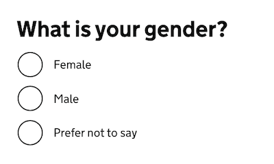
Resources about this:
- GOV.UK Design system: Ask users for Gender or sex
- GOV.UK blog post - Researching how we ask users about their ethnicity
Only considering white people
… when testing your product
Artificial Intelligence to test if a photo is valid for example
Or the ‘racist’ soap dispenser only working on white skin
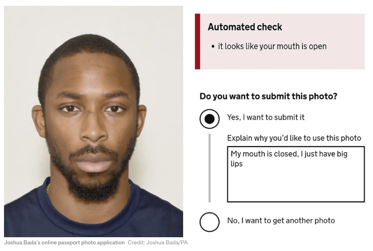
Speaker notes:
For Black people and afro hair, your photo might be rejected even though you respect the rules because the AI has been trained only or mostly with photos of white people.
'Racist' passport photo system rejects image of a young black man despite meeting government standards - The Telegraph, includes the photo of a Black man I’m using on this slide which generate an error message stating the it looks like your mouth is open even though he is respecting the rule and has his mouth closed.
On this, also check: Black man says racially-biased AI system rejected his passport photo - the next web article.
You might remember a video which was doing the rounds a while ago with a soap dispenser only working on white skin.'Racist soap dispenser' at Facebook office does not work for black people - YouTube video
Like for accessibility, testing with a wide range of people should help preventing the exclusion of people using your service in ways you might not have realised.
‘Your name is not valid’
Too short, too long, too many, special character and more …
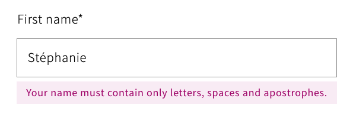
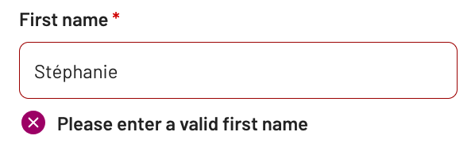
If you are curious about names, check this article by Patrick McKenzie about lots of things you might not know about names: Falsehoods Programmers Believe About Names.
A more inclusive practice:
Illustrations
Be careful with illustrations
Speaker notes:
I want to mention illustrations. Try to be intentional in your illustration choices, but be careful.
The first photo is from a LinkedIn post from Meryl Evans, she is deaf and was posting, that quite often, people illustrate articles about deaf people with a person signing, even though a lot of deaf people actually do not sign.
And then most of the times, the sign on the photo is the one on this slide where a person make a thumbs up with one hand and put it in the flat palm of the other hand. This sign means ‘Help’ . Using this sign as an illustration, means that quite often, the person is shown as needing help, so not the best message as it represents deaf people as if they always need help.
A lot of photos of people at work in a wheelchair also don’t seem to be real wheelchair users, like the second photo, showing a young woman in a suit, using a heavy wheelchair which looks more like what you would find in a hospital where another person is pushing it, rather than the model that someone who uses wheelchairs independently for mobility would use.
Resources: Inclusive photos
- Allgo - Free Plus-Size Stock Photos
- Positive and realistic depictions of later life - Centre for ageing better
- Stock photos of people with disabilities - Webaxe
- Free Stock Images Of Our Community At Work - Jopwell
- Nappy - Beautiful photos of Black and Brown people, for free
- UK Black Tech - Free Stock photos
A more inclusive practice:
Your team
In the next part, I’d like to focus on inclusion within your team.
I think that the best way to have inclusion in mind for your users is to start to really change the way you work with your own team and your stakeholders, as you work with them every day.
You might be thinking, what is she on about? There are no disabled people in my team or among my stakeholders. And maybe you’re right. But the problem is that people often think of disability as something that is visible and permanent.
There are no disabled people in my team
→ many disabilities are not visible
Neurodivergence in tech / creative industry: over 20% - probably up to 50%
→ people sometimes don’t declare their disability
Speaker notes:
Many disabilities are not visible: like hearing and sight impairments, chronic pain and many more.
Do you remember the statistic for neurodiversity? about 1 in 7 people in the general population but in tech and creative industries, it might be up to 50%
This is not visible. You might not know about it, but you surely should think about it.
Another thing to keep in mind is that people sometime don’t declare their disability to their employer/colleagues.
For lots of different reasons.
Things can change
- actual employees can become disabled
- a new joiner might be disabled
→ Make sure your systems, processes and practice are accessible for all
Creating a safe space
Do not force people to disclose a disability or medical condition
→ offer help for everyone
Instead of providing accommodations for disabled people
→ offer various options to all
Invite for feedback and allow people to reach out privately
Speaker notes:
When you are designing with people, it’s important to create a safe space. Don’t force people to disclose a disability or medical condition. Instead, offer help for everyone.
We talk about ‘accommodations’ for disabled people, but it’s better to offer various options to all instead, so it doesn’t sound like you are making a big effort just for them and that way, it will benefit more people who might not have requested anything even though they might need it.
Invite for feedback, and allow people to reach out privately: it’s not always easy to talk about your needs in public, or in a group during a meeting.
Manual of me
- help you tell others what you need
- learn about what other people in your team needs
Do not make people share more than they are willing to
| Examples of sections |
|---|
|
Speaker notes:
A ‘manual of me’ can be a great tool to communicate what you need to work well with the rest of your team. I’ve been doing this in project teams for a while and found that it helps me to tell people what I need and also to understand them better.
In there for example, I will explain that I struggle with numbers, names and acronyms if I do not have a visual support for them and you just say them, because I’m French and my brain does the little gymnastic of translating things so it slows me down, but if I have a visual, I instantly recognise it.
Resources: Inclusion within your team
- Inclusive meetings: encouraging collaboration from all – by Co-op Digital Blog
- Manual of me – by Lizzie Cass-Maran
- Inclusive icebreakers
- Quick icebreakers for online meetings (that don’t suck) - Emily Webber
A more inclusive practice:
Meetings
Organising - hosting a meeting
- before the meeting: set expectations, provide an agenda, do it again at the start of the actual session
- invite people to tell you if this might not work for them
- if using online tools like Mural or Miro, plan for an alternative
- if over an hour → plan for a break and stick to it
- repeat the question someone asked before answering unless you’re sure everyone has heard/seen it
Presenting during a meeting
- share your slides at the start of a presentation or in your invite
- keep content short and simple, test the accessibility of the deck
- use a mic, speak facing your audience, camera on if online
- leave some space at the bottom of your slides
- describe any image/ diagram, assume at least one person cannot see
- don’t assume people can read the text on slides
Resources: Creating accessibile slides
- How to make your presentations accessible to all – W3C resource
- Presentations – Readability Guidelines – by Content Design London
- Make your PowerPoint presentations accessible to people with disabilities – Microsoft support
- Create better conference slides and presentations – Stephanie Walter
Resources: Inclusion in general
- A beginner’s guide to inclusive UX design by Trina Moore Pervall
- The practicalities of inclusive service design by Fiona McAra-Hunter
- Inclusivity and content design, YouTube video by Content Teatime
- On inclusive content: Fighting talk by Ettie Bailey-King
- Liberating Structures - New website
Focus on some groups
In this last section, I’m going to tell you about a time where I focussed theresearch on a few groups which gave us the most valuable insights.
Convincing stakeholders to do user research is usually not easy. You will be tempted to do your research on the main groups of users and what you might see as an average user.
If you remember at the start, I mentioned that 1 in 4 people is disabled in the UK. You should have a similar proportion in your research participants.
But I think you could go further, you could focus your research on the people most likely to struggle with your service: the idea is that, if it works with the people facing the most barriers, it’s very likely to work with the others
Context
I’m going to tell you about a project where I was part of a small team working on a housing application for a council, early in my design career.
- Housing application for a council in Scotland
- A complex form to test to apply for council housing
- No budget for user research
- Very little time before going live
Who was most likely to struggle with the form?
People:
- who did not have English as their first language
- with low digital skills
- at risk of homelessness
- low vision or other disabilities
Speaker notes:
Normally, recruiting people with these characteristics would have been hard, but we had access to a community support worker.
He had worked for the council for a long time, he knew a lot of people and was very involved and trusted, he wanted to help us because for the first time, we were asking people to tell us what they thought would work or not before going live and he really like that.
2 rounds of testing
Our community support worker found people for us in no time. Participants were happy to help.
We organised 2 rounds of testing. Our participants were:
- Syrian refugees part of a resettlement scheme who didn’t speak English as their first language - We had interpreters with us which was really helpful, but some participants wanted to try by themselves and used Google lens to translate the interface, they were using their phone and placing it in front of the screen and Google lens would show them the Arab text instead of English automatically, it was quite impressive and helping them
- participants had low digital skills, in fact, most of the Syrian refugees never had an email address before coming to the UK
- people at risk of homelessness, one was a 16 years old who came with their support worker
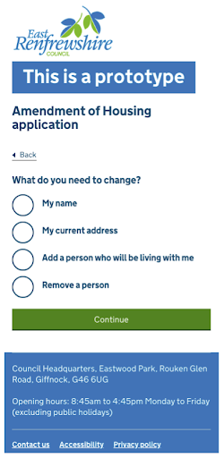
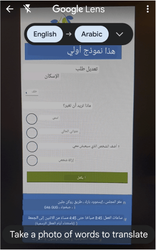
Takeaways for the housing application research
- should have had an ethic plan + be trauma informed
- having a trusted relay in the community really helps
- testing with only a few people still gave us a lot of insights
- be careful with support workers and interpreters
- in some cases, it might be ok not to provide incentives to participants
Speaker notes:
Knowing that I would be speaking to people in vulnerable situations like refugees and people at risk of homelessness, I should have been better prepared, I wasn’t and was lucky it worked ok for everyone. Now that I’m more experienced and I would do it differently.
I should have had an ethic plan and I should have made sure that people involved - like my observers - were trauma informed.
The community support worker made a huge difference to the recruiting, so having a trusted relay in the community was key - if you can have this, do use it.
We got a lot of insights with only two rounds of research. For example, we realised that we needed a triage question quite early on, so that homeless people would not go through the form, instead we gave them a phone number to contact the council where they would get support quickly. This simplified the form a lot.
You need to plan when you have another person answering, like the support worker for our teenager participant, or the interpreters for the Syrian refugees You need to explain how you work before the session, and clarify what you need from them so they don’t answer instead of the participant or give too much info for example.
Regarding providing incentives to participants of your research and to their support workers or interpreters. In this case, the support worker for the teenager and interpreters were doing this as part of their jobs, so they were paid by the council, but we didn’t provide any incentive to the participants.
Most of them seemed really happy to help as, in a way,it was an opportunity for them to give back to that community support worker, and also a way to try the form and train on it before doing it for real once the form would go live. But it could have been different, so it’s worth discussing potential incentives early in your project and planning a budget for this.
Focussing on these groups was possible and worked for me at the time. It might not be right for you, but I’m sharing this as it might be an option you would not have thought of otherwise.
Resources about research
- Designed with Care: Creating trauma-informed content
- Working definition of trauma-informed practice - GOV.UK
- Building UX research practices for inclusion by Josh Kim and Maureen Barrientos - YouTube video
- Citizen Advice
- User research with disabled people and their families Scope
- Inclusive user research: vulnerable people - Tetralogical
Key takeaways
Accessibility
1 in 4 person are disabled
1 in 7 person are neurodivergent
- most issues are easy to fix, like adding alt text, checking colour contrast and making sure the text of your link is meaningful
- do not rely on colour alone to convey meaning
- 2 tests: keyboard only and zoom 400%
- be careful with numbers
- do NOT use accessibility overlays!
Digital capability: device - network
- Make it work when the network is poor
- Mobile first
- Test on old devices
- Offer alternative channels
Digital capability: data
- provide a file’s link instead of only an option to download it
- if not possible, provide the size of this file
- keep images files big enough so the quality allows to see them well, but small enough that it doesn’t use too much data to load
→ it’s a balance to have between accessibility and digital inclusion
A more inclusive practice
- be careful with how you ask about ethnicity, sex and gender
- make sure you are not excluding valid names
- do not only test with white people
- be intentional with your illustrations
To improve inclusion in your team
- do not assume there are no disabled people in your team
- consider neurodivergence and low numeracy in particular
- be careful with ice breakers and use manuals of me
- use accessibility checkers for your slides and word documents
- send your presentation ahead of the meeting